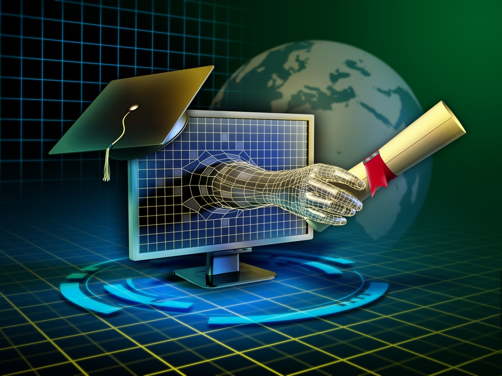

Introduccion
La carrera de informatica es una de las mas completas, donde cada uno de sus estudiantes se especializan en cada una de las diferentes areas que existen, esta carrera es una de las mas fundamentales en estos tiempos ya que se dedica al estudio, diseño y aplicacion de sistemas computarizados, ademas de la creacion de aplicaciones o paginas web, todo esto se desarrolla en una area diferente, tiene muchos propositos y objetivos, pero el mas importante es resolver problemas mediante el uso de tecnologias, adaptandose y dandole un buen uso a estas.

Vistazo al futuro
Si te decides por escoger esta carrera te puedo asegurar que no te arrepentiras de nada, todo lo contrario, si eres de esas personas curiosas que les gusta o interesa saber como funcionan las cosas, ya se sea computadoras o algo mas esto es para ti, a lo largo de la carrera de toparas con areas que se especializan en mantenimiento, donde conoceras las partes que componen los gabinetes del cpu, disco duro, memoria ram, etc. la carrera en si es muy completa con cada una de sus areas, todas super interesantes y creativas, solo necesitas poner de tu parte y escogerla, animate y no pierdas tu tiempo pensando de mas!
Caracteristicas
- combina conocimientos de matematica, logica, electronica
- aprendes lenguajes de programacion, estructuras datos, inteligencia artificial
- aprendizaje continuo es clave mantenerse vigente con las actualizaciones
- simulaciones, modelos computacionales y trabajar en equipo
Ventajas
- alta empleabilidad
- excelentes salarios
- versatilidad profesional
- trabajo remoto y flexibilididad
Mas informacion sobre la pagina